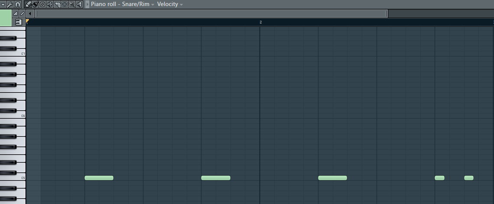

DAW: Image-Line FL Studio
The image above displays what happens when you take a solo track and bring it into the piano roll. You can see a basic snare pattern on the C5 piano key clearly. Moving this up and down will pitch shift the snare sound. The grid on the piano roll splits measures by your selected choice.
DAW: Image-Line FL Studio
The image above displays a simple Reggae beat pattern that is familiar to many people when heard. For stuttering purposes, I bring my patterns into the Piano Roll. This allows me to be more free and precise with stuttering, pitch shifting, or panning.